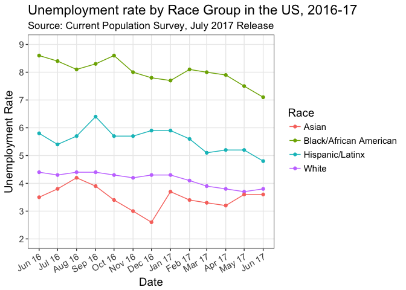
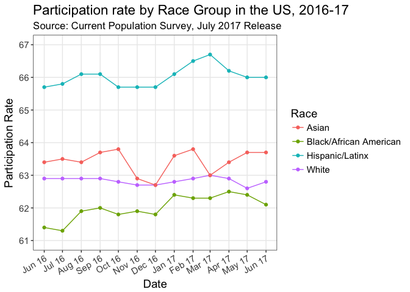

The July 2017 Jobs Report and Race
The jobs report came out yesterday (7 July 2017) and I wanted to check out what the unemployment numbers look like by race, because, you know, I’m interested in race in the USA (see here). I couldn’t find a quick figure to compare the employment numbers across race groups, which I wanted to see. So, having done my day-job duty of submitting an article (:pray:), and while watching a movie with Amy after dinner I thought I’d teach myself how to scrape a website and make the figure myself. Here’s what I wanted to see but couldn’t find. In this post, I show you how I created it.

Why do it?
Before we do anything else, let’s articulate why it’s useful to write reproducible code to scrape a website (especially when there aren’t easily-downloadable .csv files to download and read into R).
- The BLS releases these reports every month, therefore I can lightly tweak the code and get a similar figure next month
- Other people can see what I did and look at other outcomes they’re more interested in
- It serves as a teaching tool (hence very step-by-step and maybe a little ugly)
- Writing reproducible code broadly demonstrates integrity and transparency (values I want to uphold and see my students uphold)
OK. Enough blathering. Onto the code!
Scraping
As we would expect, Hadley Wickham has a package that helps us to scrape html, called rvest (“ha…rvest”, get it?) (Wickham 2016). In that package is a very useful function called read_html(). To make things clearer when I call the function, I simply specify an object called url that I defined as the CPS page with the table I want from the Bureau of Labor Statistics site. I also define what the html “nodes” are when I create another object. So you know, I used this how-to by Bradley Boehmke to get the basics, the rest was trial-and-error and StackOverflow.
url <- "https://www.bls.gov/web/empsit/cpseea04.htm"
website <- read_html(url)
tbls <- html_nodes(website, "table")The data.table way
The object tbls is a “large list”, which we can’t do much with yet. So, unfortunately, our job is not done and we need to extract from the tbls object the one list we want. We then convert that list to a data.table using the data.table package (Dowle and Srinivasan 2017).
tbls_ls <-
website %>%
html_nodes("table") %>%
.[2] %>%
html_table(fill = TRUE)
dt <- as.data.table(tbls_ls, keep.rownames = "rownames")Notice, though, that when we View(dt) we have a bunch of unnecessary rows. Let’s get rid of them.
dt <- dt[-c(1, 32, 63, 73, 104, 105, 106)]OK. We now have a somewhat clunky data table, but we still have errant rows from the website with race groups, different categories, etc. We have a bunch of wrangling to do.
Wrangling
What I show you below is the result of my trying to work out how to get this clunky rubbish into a nice and tidy data table. Because I’m still pretty new to R (and mostly self-taught), I’m sure there are better ways to do this and I do not think my way is the best way, but it’s the way I worked out circa 10pm last night.
So, what do we need to do?
- we need to create subsets of the data for the different groups (notice we have different groups: race group as a whole, males 20 and over, females 20 and over, both 16 to 19)
- we want a tidy data table with variables as columns and observations as rows (notice that the data table we currently have has variables as rows and observations as columns)
- therefore, we need dates to attribute to each observation (as our rows)
- we need to create variables for race, category and gender (to add to our eventual columns)
- we need therefore to
transpose()the dataset to make it tidy (note: we’ll also have to tell it to stop treating the data table as a trasnpose, else this characteristic persists and functions that manipulate rows will manipulate columns instead) - let’s test this with Whites (I do this because Whites are the first rows in the data set, no other reason)
dtwhitetot <- dt[2:9] #subset white totals
dtwhitetot <- dtwhitetot[-c(1)] #delete first row
dtwhitetot <- transpose(dtwhitetot) #take the transpose - switch rows & columns
dtwhitetot <- data.table(dtwhitetot) #say that this is the new data table
dtwhitetot <- dtwhitetot[-c(1)] #remove unnecessary first row
dates <- c("2016-06-01", "2016-07-01", "2016-08-01", "2016-09-01", "2016-10-01", "2016-11-01", "2016-12-01", "2017-01-01", "2017-02-01", "2017-03-01", "2017-04-01", "2017-05-01", "2017-06-01") #create a vector of dates that we'll use
dtwhitetot <- cbind(dtwhitetot, dates) #bind the dates and the data.table together
names(dtwhitetot) <- c("Civilian labor force", "Participation rate", "Employed", "Employment-population ratio", "Unemployed", "Unemployment rate", "Not in labor force", "date") #define the names of this data.table
dtwhitetot <- #Create the new variables for race, category and gender
dtwhitetot %>%
mutate(race = "White", category = "total", gender = "both") OK. So the above is how I do it for each of the groups I want. Notice the transpose followed by the data.table() to “untranspose.” If I didn’t re-call the data.table() function, then I’d end up deleting columns when I use the command dtwhitetot <- dtwhitetot[-c(1)].
So now I need to repeat what I just did, but for all the other ethnicities:
#Black or African American
dtblacktot <- dt[32:39]
dtblacktot <- dtblacktot[-c(1)]
dtblacktot <- transpose(dtblacktot)
dtblacktot <- data.table(dtblacktot)
dtblacktot <- dtblacktot[-c(1)]
dtblacktot <- cbind(dtblacktot, dates)
names(dtblacktot) <- c("Civilian labor force", "Participation rate", "Employed", "Employment-population ratio", "Unemployed", "Unemployment rate", "Not in labor force", "date")
dtblacktot <-
dtblacktot %>%
mutate(race = "Black/African American", category = "total", gender = "both")
#Asian
dtasiantot <- dt[62:69]
dtasiantot <- dtasiantot[-c(1)]
dtasiantot <- transpose(dtasiantot)
dtasiantot <- data.table(dtasiantot)
dtasiantot <- dtasiantot[-c(1)]
dtasiantot <- cbind(dtasiantot, dates)
names(dtasiantot) <- c("Civilian labor force", "Participation rate", "Employed", "Employment-population ratio", "Unemployed", "Unemployment rate", "Not in labor force", "date")
dtasiantot <-
dtasiantot %>%
mutate(race = "Asian", category = "total", gender = "both")
#Hispanic/Latinx
dthisptot <- dt[71:78]
dthisptot <- dthisptot[-c(1)]
dthisptot <- transpose(dthisptot)
dthisptot <- data.table(dthisptot)
dthisptot <- dthisptot[-c(1)]
dthisptot <- cbind(dthisptot, dates)
names(dthisptot) <- c("Civilian labor force", "Participation rate", "Employed", "Employment-population ratio", "Unemployed", "Unemployment rate", "Not in labor force", "date")
dthisptot <-
dthisptot %>%
mutate(race = "Hispanic/Latinx", category = "total", gender = "both")Having got these subsetted data tables for each group, we now need to bind them together as rows of an overall dataset. To do that, we just use rbind() (“row bind”) and specify the names of each of the data tables.
totals <- rbind(dtwhitetot, dtblacktot, dtasiantot, dthisptot)
names(totals) <- c("civ.labor.force", "participation.rate", "employed", "emp.pop.ratio", "unemployed", "unemployment.rate", "Not.in.labor.force", "date", "race", "category", "gender")I then re-name the variables because I realized the ones with spaces suck for manipulation in R (remember, 10pm approaching 11pm now)
The next thing we could see with our data table is that the variables we want aren’t in the most useful formats. To check this call str(totals) and you’ll see that the dates aren’t read as dates, the unemployment rate is treated as a character, and so on. So let’s fix that.
totals <-
totals %>%
mutate(date = as.Date(date, origin = "2016-06-06"),
unemployment.rate = parse_number(unemployment.rate),
participation.rate = parse_number(participation.rate),
race = factor(race))Plot the data
Finally, we can plot the data. I just want to look at unemployment and race, so I select those variables and the date (as I’ll have date as the x-axis variable). I then plot these as usual using ggplot().
unemp <-
totals %>%
select(date, unemployment.rate, race)
ueplot <-
unemp %>%
ggplot(aes(x = date, y = unemployment.rate, color = race, group = race)) +
geom_line() +
geom_point() +
theme_bw() +
xlab("Date") +
ylab("Unemployment Rate") +
scale_x_date(date_breaks = "1 month", date_labels = "%b %y") + #correct date format
scale_y_continuous( breaks = seq(2, 9, 1), #specify y-axis breaks
limits = c(2, 9)) + #specify y-axis limits
scale_color_discrete(name = "Race") + #legend for Race
theme(axis.text.x = element_text(angle = 30, hjust = 1), #Change x-axis label orientation
text = element_text(size = 14), #Change other text size
panel.grid.minor = element_blank()) +
labs(title = "Unemployment rate by Race Group in the US, 2016-17",
subtitle = "Source: Current Population Survey, July 2017 Release")
ueplot
And there you have it – A plot of unemployment by race group.
We could easily do the same for the participation rate (as people are concerned about that):
participation <-
totals %>%
select(date, participation.rate, race)
partplot <-
participation %>%
ggplot(aes(x = date, y = participation.rate, color = race, group = race)) +
geom_line() +
geom_point() +
theme_bw() +
xlab("Date") +
ylab("Participation Rate") +
scale_x_date(date_breaks = "1 month", date_labels = "%b %y") + #correct date format
scale_y_continuous( breaks = seq(61, 67, 1), #specify y-axis breaks
limits = c(61, 67)) + #specify y-axis limits
scale_color_discrete(name = "Race") + #legend for Race
theme(axis.text.x = element_text(angle = 30, hjust = 1), #Change x-axis label orientation
text = element_text(size = 14), #Change other text size
panel.grid.minor = element_blank()) +
labs(title = "Participation rate by Race Group in the US, 2016-17",
subtitle = "Source: Current Population Survey, July 2017 Release")
partplot
OK. All done for now. Happy Saturday.
Extras
I did some other subsetting I haven’t used yet, but here’s the code.
dtwhitem20 <- dt[11:16]
dtwhitem20 <- dtwhitem20[-c(1)]
dtwhitem20 <-
dtwhitem20 %>%
mutate(race = "white", category = "male 20 and over", gender = "male")
dtwhitef20 <- dt[18:23]
dtwhitef20 <- dtwhitef20[-c(1)]
dtwhitef20 <-
dtwhitef20 %>%
mutate(race = "white", category = "female 20 and over", gender = "female")
dtwhitead <- dt[25:30]
dtwhitead <- dtwhitead[-c(1)]
dtwhitead <-
dtwhitead %>%
mutate(race = "white", category = "both 16 to 19", gender = "both")
dtblackm20 <- dt[41:46]
dtblackm20 <- dtblackm20[-c(1)]
dtblackm20 <-
dtblackm20 %>%
mutate(race = "black", category = "male 20 and over", gender = "male")
dtblackf20 <- dt[48:53]
dtblackf20 <- dtblackf20[-c(1)]
dtblackf20 <-
dtblackf20 %>%
mutate(race = "black", category = "female 20 and over", gender = "female")
dtblackad <- dt[55:60]
dtblackad <- dtblackad[-c(1)]
dtblackad <-
dtblackad %>%
mutate(race = "black", category = "both 16 to 19", gender = "male")
dthispm20 <- dt[80:85]
dthispm20 <- dthispm20[-c(1)]
dthispm20 <-
dthispm20 %>%
mutate(race = "hispanic/latinx", category = "male 20 and over", gender = "male")
dthispf20 <- dt[87:92]
dthispf20 <- dthispf20[-c(1)]
dthispf20 <-
dthispf20 %>%
mutate(race = "hispanic/latinx", category = "female 20 and over", gender = "female")
dthispad <- dt[94:99]
dthispad <- dthispad[-c(1)]
dthispad <-
dthispad %>%
mutate(race = "hispanic/latinx", category = "both 16 to 19", gender = "both")References
Dowle, Matt, and Arun Srinivasan. 2017. Data.table: Extension of ‘Data.frame‘. https://CRAN.R-project.org/package=data.table.
Wickham, Hadley. 2016. Rvest: Easily Harvest (Scrape) Web Pages. https://CRAN.R-project.org/package=rvest.